God of Destruction — Meta Judas 20M
KiChi Frame · 9,3N lượt xem · 4 ngày trước — Meta mới dùng Judas, lên tới 20M điểm.
Xem video ↗Advent Expedition có 5 boss: 4 Destructive Shadow — Teo, Kyle, Yeonhee, Karma (Four Lords of Old) — và God of Destruction, mở sau khi đánh bại cả 4 boss. Mỗi khu vực dưới đây gồm các video hướng dẫn từ nhiều kênh khác nhau để tham khảo nhiều cách đánh và đội hình.
8 bài viết

KiChi Frame · 9,3N lượt xem · 4 ngày trước — Meta mới dùng Judas, lên tới 20M điểm.
Xem video ↗7KDreamer Plays · 6,4N lượt xem · 2 ngày trước — Đội hình Judas mới đạt điểm cao trước God of Destruction.
Xem video ↗
KiChi Frame · 12N lượt xem · 1 tháng trước — Meta Eileene thức tỉnh, đội hình ai cũng có thể dùng.
Xem video ↗
Ren7k · 300 lượt xem · 1 tháng trước — Hướng dẫn dễ làm theo, đạt 16,5M với Eileene thức tỉnh.
Xem video ↗
7KDreamer Plays · 11N lượt xem · 4 tháng trước — Dùng Heavenia để tăng điểm số.
Xem video ↗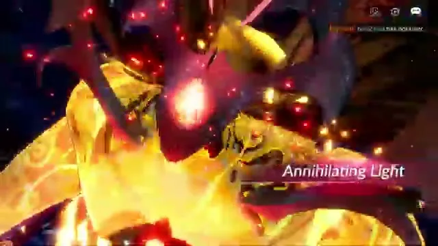
7KDreamer Plays · 5,8N lượt xem · 2 tháng trước — So sánh support Sunran và Melia, đánh trong 4 và 8 lượt.
Xem video ↗
Ren7k · 896 lượt xem · 2 tháng trước — Trang bị và thứ tự xoay kỹ năng với Shane/Sunran, đạt 13,5M.
Xem video ↗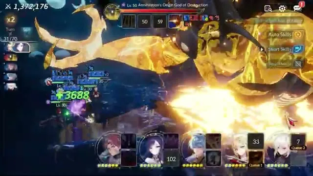
Sói Béo · 27 lượt xem · 11 tháng trước — Video tiếng Việt, thực chiến đạt 2,8M điểm.
Xem video ↗4 bài viết
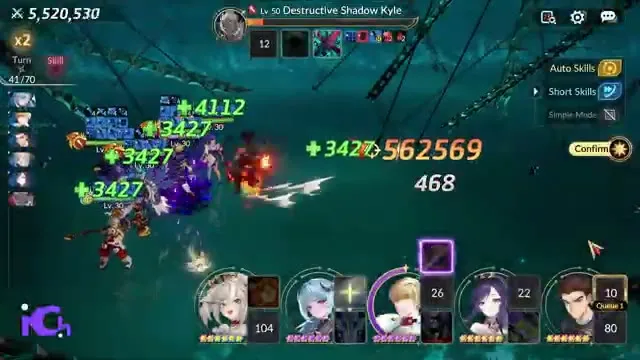
KiChi Frame · 15N lượt xem · 1 tháng trước — Chạy full cả 4 boss Teo/Kyle/Yeonhee/Karma đều đạt 6M, không phụ thuộc RNG.
Xem video ↗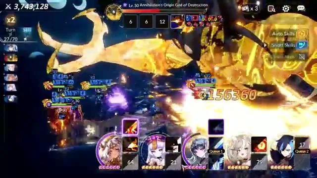
7KDreamer Plays · 25N lượt xem · 1 tháng trước — Shinobu Kocho với sát thương đơn mục tiêu mạnh giúp chạy Shadow Teo nhanh nhất.
Xem video ↗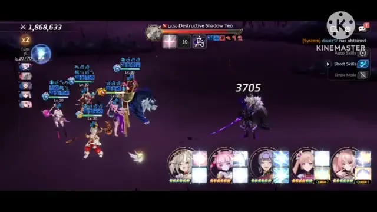
JETLY TAIL · 1N lượt xem · 1 tháng trước — Đội hình Teo đạt 6M điểm dùng Shinobu.
Xem video ↗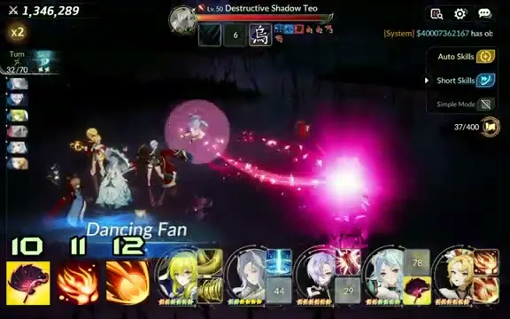
Petal · 6,2N lượt xem · 11 tháng trước — Hướng dẫn thứ tự xoay kỹ năng đánh Teo, đạt 4,3 triệu điểm.
Xem video ↗4 bài viết
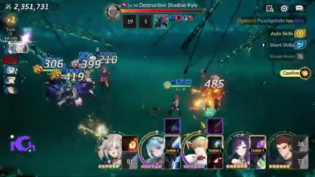
KiChi Frame · 5,5N lượt xem · 30/06/2026 — Dùng 2 hero Awakening (Dellons 48 lượt và Fai 44-48 lượt), rotation chi tiết ghim ở bình luận.
Xem video ↗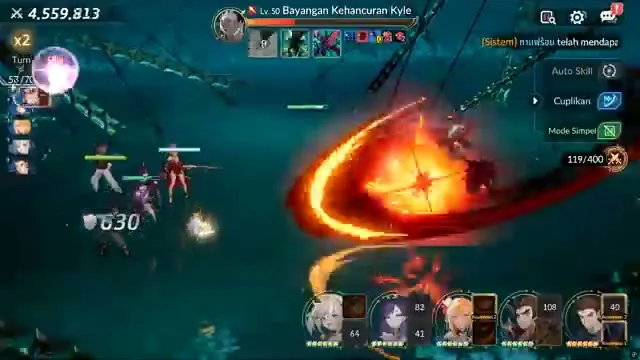
Delleon · 120 lượt xem · 7 tháng trước — Đạt 6M điểm, hướng dẫn rotation và gear — Phase 1 Shane DPS, Phase 2 Bai Long DPS.
Xem video ↗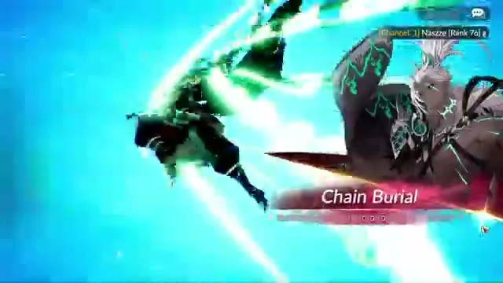
7KDreamer Plays · 5,1N lượt xem · 8 tháng trước — So sánh đội hình Kyle cập nhật: Bai Long T12 đấu Shane T12, xem nên dùng DPS nào.
Xem video ↗
Luminesensi · 1,5N lượt xem · 8 tháng trước — Gameplay đạt 6.000.000 điểm trong 69 lượt, trình diễn đội hình và rotation kỹ năng.
Xem video ↗4 bài viết
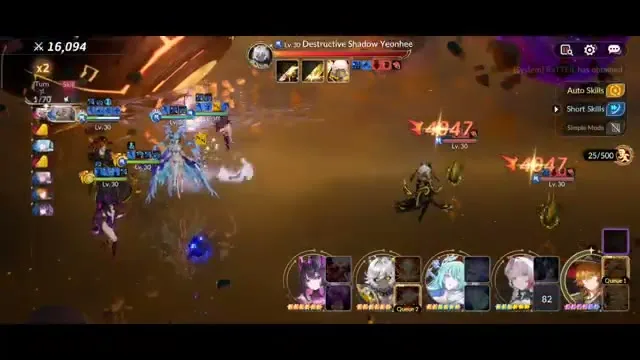
SteVGard · 306 lượt xem · 1 tháng trước — Đánh Yeonhee trong 40 lượt để nhận thưởng theo tier.
Xem video ↗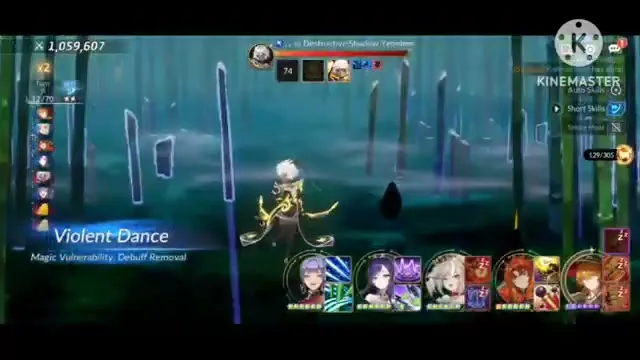
JETLY TAIL · 2,2N lượt xem · 2 tháng trước — Đánh Yeonhee đạt 6M với Yoongun trong đội hình.
Xem video ↗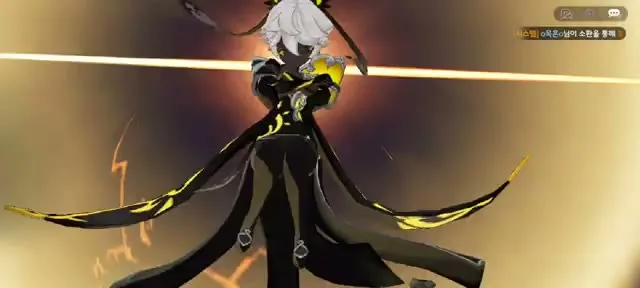
WhiteBear · 104 lượt xem · 11 tháng trước — Video tiếng Việt, thực chiến đánh boss Yeonhee.
Xem video ↗Zac Fredrich · 4,4N lượt xem · 10 tháng trước — Đánh Yeonhee đạt 6M điểm với Wukong và Juri trong đội hình.
Xem video ↗4 bài viết
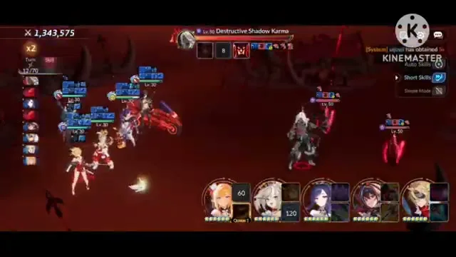
JETLY TAIL · 1,7N lượt xem · 1 tháng trước — Đánh Karma 6M với Eileene, hoàn thành trong 8 lượt.
Xem video ↗KiChi Frame · 3,9N lượt xem · 4 tháng trước — Rotation SpeedRun 40-44 lượt và rotation 48 lượt với Awakening Heavenia.
Xem video ↗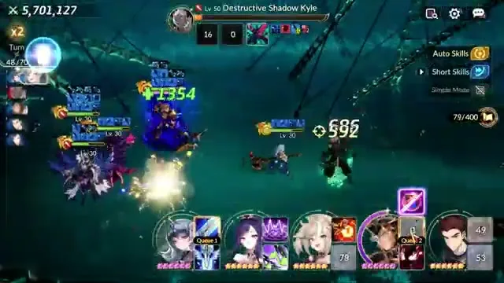
7KDreamer Plays · 7,5N lượt xem · 2 tháng trước — Dùng Sunran để rút ngắn lượt chạy Advent, đạt 6M ở cả Shadow Kyle và Shadow Karma.
Xem video ↗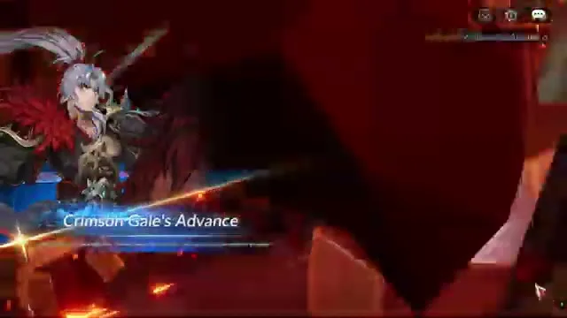
Edwindza · 1N lượt xem · 7 tháng trước — Chạy Karma 6M, có ghi chú thay thế cho người chưa clear được trong 16 lượt.
Xem video ↗